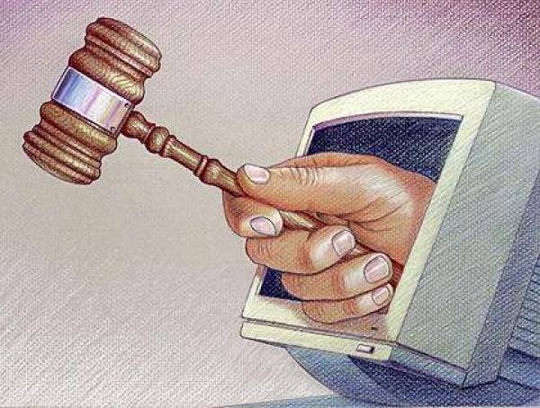

Информационное общество
Право в интернете
В наще время трудно определить,какие органы должны рассматривать различые вопросы и споры.Интернет в наше время представляет собой пример того,как выглядит эфективная и удачная сложная техническая системя практически без центров управления.
-Ни в одной стране нет всеобъемлющего законодательства по Интернета.
Нормы,которые можно было бы применить к правовым отношениям в Интернете, разбросанных по законодательным актам других отрослей.Практически отсутствует регулирование правовых отношений в Интернете на международном уровне.
